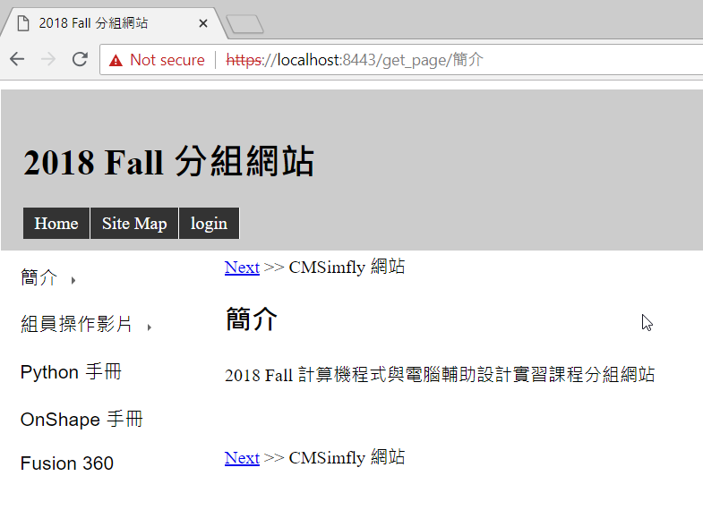
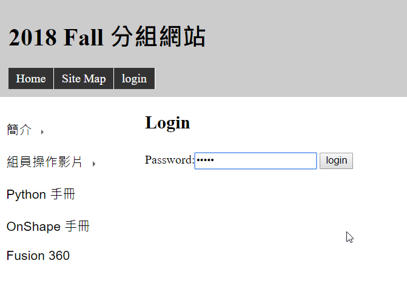
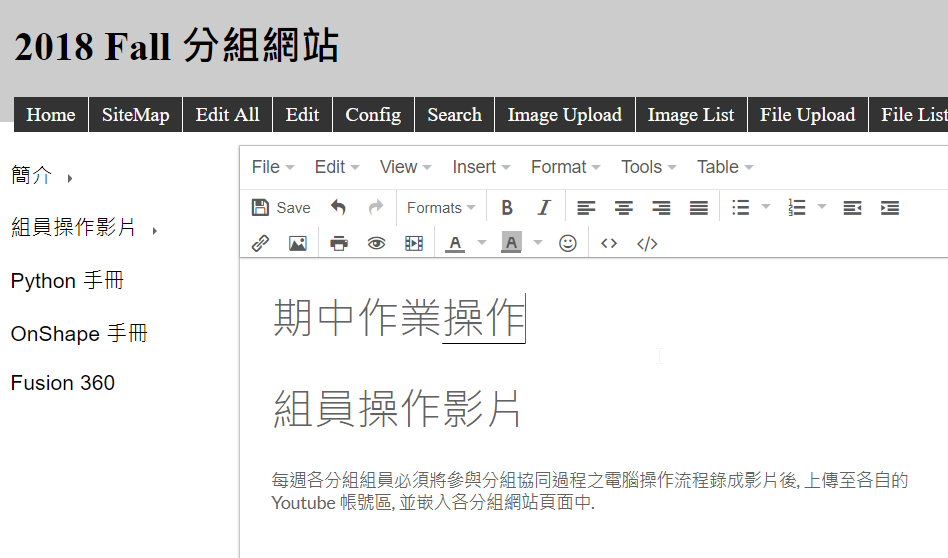

期中作業操作
以下的解說圖片, 是以 ShareX 中的 Task settings 下的 Upload 下的 File name 設定, 將 Name pattern for window capture, 從 %pn_%y-%mo-%d_%h-%mi-%s 改為 p37_%h-%mi-%s, 表示此一系列的取圖檔, 將會以 p37 加上取圖時間做為檔名, 以資辨識.
之後, 再利用 CMSimfly 中的 Image Upload 功能, 一次上傳多個圖檔, 放入 images 目錄中引用.
當使用者開啟 Zoomit 與 ShareX 之後, 可以交互利用 Ctrl + 1 以 Zoomit 的功能放大螢幕, 選擇畫面, 以畫筆標示重點, 然後再結合 ShareX 的 Ctrl + PrintScreen 選擇所要取圖的範圍後, 即可逐一在電腦操作過程中, 取得所需要的畫面圖檔, 然後再放入 CMSimfly 內容管理頁面中使用.
本課程使用以 Python 3.7.0 為主的可攜程式系統, 在 p37 目錄中有 data 目錄, 以及兩個 batch 批次檔案.
批次檔案是將 Windows 在命令列中可以執行的指令, 寫在副檔名為 bat 的純文字檔案中, 使用者可以直接點擊兩次執行批次檔案中的指令.
start.bat 用於啟動可攜系統, 而 stop.bat 則用於終止可攜系統, 若終止後在操作系統中無 p37 目錄中的任何應用程式開啟, 則使用者可以安全以 eject 退出帶有 p37 目錄的隨身碟.
位於 D: 槽的 USB p37 目錄如下圖:

由於在超文件中所引用的圖片檔案, 在無明顯外框標示界定下, 可能會與頁面說明產生混淆, 因此利用 Leo Editor 開啟 cmsimfly.leo, 直接在 Flask 程式中的 syntaxhighlight 函式加入設定 img border 的 style css 碼, 可以設定動態內容管理系統, 而修改 syntaxhighlight2, 則可修改靜態的頁面 css 設定. 所加入的 css 設定如下:
<style>
img {
border: 3px solid red;
}
</style>
start.bat 批次檔案, 以 SciTE 編輯器開啟.

stop.bat 批次檔案, 以 SciTE 編輯器開啟.
start.bat 批次檔案中的 set 指令區, 主要設定系統的環境變數, Disk 為自訂變數名稱.
登入 github 後畫面, 可以切換到 profile 或 repositories.
登入 github 後, 可以利用 https://github.com 連結到有權限擷取的倉儲列表.

進入先前所認領的期中作業倉儲.

將遠端的作業倉儲內容, git clone 一份到近端, 以便在工作目錄中進行改版.

將遠端倉儲 git clone 到近端後, 利用 cd 更換目錄, 進入作業倉儲.

將遠端的作業倉儲 git clone 到近端後, 進入該倉儲目錄後, 可以利用 python wsgi.py 啟動動態內容管理系統.

python wsgi.py 指令表示要利用 Python 解譯器執行作業目錄中的 wsgi.py 程式, 啟動後, 可以利用瀏覽器連結近端的 CMSimfly 內容管理系統.

由於近端利用 python wsgi.py 啟動時, 所使用的 SSL 數位簽章為 self-signed, 因此需要進一步確認後, 才能完成連結. 但是 self-signed 的數位簽章, 並未經過第三方公證, 因此被瀏覽器認定此一連結為 unsafe, 不過, 因此此一 self-signed 所建立的 https 連結, 旨在瀏覽器與伺服器間傳遞資料時, 能夠透過此一數位簽章編碼, 以避免在兩端間以明碼傳遞資料, 尤其當伺服器安裝在區域網路或廣域網路時, 直接使用 http 協定傳遞使用者的帳號與密碼, 是沒有必要且容易被中途攔截.
完成連結後將可在近端以內建的 admin 密碼登入, 開始維護網站內容.

利用滑鼠點擊 login 登入.
輸入 admin 後登入.

登入後將內定轉到 edit all 的畫面, 也就是編輯整個位於 config 目錄中的 content.htm 檔案.
需要編輯其中任何一頁時, 先連結到該頁面後, 按下 Edit 後可以在 tinymce4 編輯器中編輯內容.

由於 CMSimfly 動態系統中, 以 h1, h2, h3 等三個超文件標註作為各頁面標題, 且循序排列各 h1, h2 與 h3 標題內容, 因此使用者可以在上一個頁面 (可能是 h1, h2 或 h3 頁面) 超文件最後面加入標題, 或者在下一頁標題的最前方加入頁面標題, 下列畫面選擇在組員操作影片上方新增一個 h1 標題頁面, 標題為"期中作業操作".


pelican 網誌 << Previous Next >> 組員操作影片